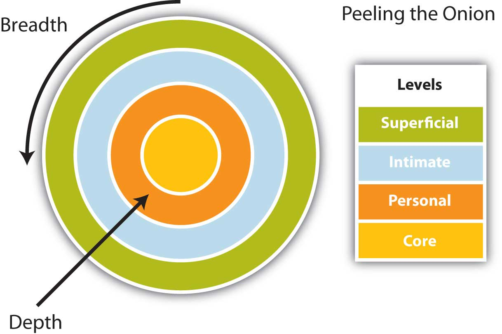

We are more easily persuaded, in general, by the reasons that we ourselves discovers than by those which are given to us by others.
Pascal
For every sale you miss because you’re too enthusiastic, you will miss a hundred because you’re not enthusiastic enough.
Zig Ziglar
No doubt there has been a time when you wanted something from your parents, your supervisor, or your friends, and you thought about how you were going to present your request. But do you think about how often people—including people you have never met and never will meet—want something from you? When you watch television, advertisements reach out for your attention, whether you watch them or not. When you use the Internet, pop-up advertisements often appear. Living in the United States, and many parts of the world, means that you have been surrounded, even inundated, by persuasive messages. Mass media in general and television in particular make a significant impact you will certainly recognize.
Consider these facts:
Mass communication contains persuasive messages, often called propaganda, in narrative form, in stories and even in presidential speeches. When President Bush made his case for invading Iraq, his speeches incorporated many of the techniques we’ll cover in this chapter. Your local city council often involves dialogue, and persuasive speeches, to determine zoning issues, resource allocation, and even spending priorities. You yourself have learned many of the techniques by trial and error and through imitation. If you ever wanted the keys to your parents’ car for a special occasion, you used the principles of persuasion to reach your goal.
PersuasionAn act or process of presenting arguments to move, motivate, or change your audience. is an act or process of presenting arguments to move, motivate, or change your audience. Aristotle taught that rhetoric, or the art of public speaking, involves the faculty of observing in any given case the available means of persuasion.Covino, W. A., & Jolliffe, D. A. (1995). Rhetoric: Concepts, definitions, boundaries. Boston, MA: Allyn & Bacon. In the case of President Obama, he may have appealed to your sense of duty and national values. In persuading your parents to lend you the car keys, you may have asked one parent instead of the other, calculating the probable response of each parent and electing to approach the one who was more likely to adopt your position (and give you the keys). Persuasion can be implicit or explicit and can have both positive and negative effects. In this chapter we’ll discuss the importance of ethics, as we have in previous chapters, when presenting your audience with arguments in order to motivate them to adopt your view, consider your points, or change their behavior.
MotivationInvolves the force, stimulus, or influence to bring about change. is distinct from persuasion in that it involves the force, stimulus, or influence to bring about change. Persuasion is the process, and motivation is the compelling stimulus that encourages your audience to change their beliefs or behavior, to adopt your position, or to consider your arguments. Why think of yourself as fat or thin? Why should you choose to spay or neuter your pet? Messages about what is beautiful, or what is the right thing to do in terms of your pet, involve persuasion, and the motivation compels you to do something.
Another way to relate to motivation also can be drawn from the mass media. Perhaps you have watched programs like Law and Order, Cold Case, or CSI where the police detectives have many of the facts of the case, but they search for motive. They want to establish motive in the case to provide the proverbial “missing piece of the puzzle.” They want to know why someone would act in a certain manner. You’ll be asking your audience to consider your position and provide both persuasive arguments and motivation for them to contemplate. You may have heard a speech where the speaker tried to persuade you, tried to motivate you to change, and you resisted the message. Use this perspective to your advantage and consider why an audience should be motivated, and you may find the most compelling examples or points. Relying on positions like “I believe it, so you should too,” “Trust me, I know what is right,” or “It’s the right thing to do” may not be explicitly stated but may be used with limited effectiveness. Why should the audience believe, trust, or consider the position “right?” Keep an audience-centered perspective as you consider your persuasive speech to increase your effectiveness.
You may think initially that many people in your audience would naturally support your position in favor of spaying or neutering your pet. After careful consideration and audience analysis, however, you may find that people are more divergent in their views. Some audience members may already agree with your view, but others may be hostile to the idea for various reasons. Some people may be neutral on the topic and look to you to consider the salient arguments. Your audience will have a range of opinions, attitudes, and beliefs across a range from hostile to agreement.
Rather than view this speech as a means to get everyone to agree with you, look at the concept of measurable gainA system of assessing the extent to which audience members respond to a persuasive message., a system of assessing the extent to which audience members respond to a persuasive message. You may reinforce existing beliefs in the members of the audience that agree with you and do a fine job of persuasion. You may also get hostile members of the audience to consider one of your arguments, and move from a hostile position to one that is more neutral or ambivalent. The goal in each case is to move the audience members toward your position. Some change may be small but measurable, and that is considered gain. The next time a hostile audience member considers the issue, they may be more open to it. Figure 14.1 "Measurable Gain" is a useful diagram to illustrate this concept.
Figure 14.1 Measurable Gain

Edward HallHall, E. (1966). The hidden dimension. New York, NY: Doubleday. also underlines this point when discussing the importance of context. The situation in which a conversation occurs provides a lot of meaning and understanding for the participants in some cultures. In Japan, for example, the context, such as a business setting, says a great deal about the conversation and the meaning to the words and expressions within that context. In the United States, however, the concept of a workplace or a business meeting is less structured, and the context offers less meaning and understanding.
Cultures that value context highly are aptly called high-context cultures. Those that value context to a lesser degree are called low-context cultures. These divergent perspectives influence the process of persuasion and are worthy of your consideration when planning your speech. If your audience is primarily high-context, you may be able to rely on many cultural norms as you proceed, but in a low-context culture, like the United States, you’ll be expected to provide structure and clearly outline your position and expectations. This ability to understand motivation and context is key to good communication, and one we will examine throughout this chapter.
Persuasion is the act of presenting arguments for change, while motivation involves the force to bring about change. The concept of measurable gain assesses audience response to a persuasive message.
What is the best way to succeed in persuading your listeners? There is no one “correct” answer, but many experts have studied persuasion and observed what works and what doesn’t. Social psychologist Robert CialdiniCialdini, R. (1993). Influence. New York, NY: Quill. offers us six principles of persuasion that are powerful and effective:
You will find these principles both universal and adaptable to a myriad of contexts and environments. Recognizing when each principle is in operation will allow you to leverage the inherent social norms and expectations to your advantage, and enhance your sales position.
ReciprocityThe mutual expectation for exchange of value or service. is the mutual expectation for exchange of value or service. In all cultures, when one person gives something, the receiver is expected to reciprocate, even if only by saying “thank you.” There is a moment when the giver has power and influence over the receiver, and if the exchange is dismissed as irrelevant by the giver the moment is lost. In business this principle has several applications. If you are in customer service and go out of your way to meet the customer’s need, you are appealing to the principle of reciprocity with the knowledge that all humans perceive the need to reciprocate—in this case, by increasing the likelihood of making a purchase from you because you were especially helpful. Reciprocity builds trust and the relationship develops, reinforcing everything from personal to brand loyalty. By taking the lead and giving, you build in a moment where people will feel compelled from social norms and customs to give back.
You want what you can’t have, and it’s universal. People are naturally attracted to the exclusive, the rare, the unusual, and the unique. If they are convinced that they need to act now or it will disappear, they are motivated to action. ScarcityThe perception of inadequate supply or a limited resource. is the perception of inadequate supply or a limited resource. For a sales representative, scarcity may be a key selling point—the particular car, or theater tickets, or pair of shoes you are considering may be sold to someone else if you delay making a decision. By reminding customers not only of what they stand to gain but also of what they stand to lose, the representative increases the chances that the customer will make the shift from contemplation to action and decide to close the sale.
Trust is central to the purchase decision. Whom does a customer turn to? A salesperson may be part of the process, but an endorsement by an authority holds credibility that no one with a vested interest can ever attain. Knowledge of a product, field, trends in the field, and even research can make a salesperson more effective by the appeal to the principle of authority. It may seem like extra work to educate your customers, but you need to reveal your expertise to gain credibility. We can borrow a measure of credibility by relating what experts have indicated about a product, service, market, or trend, and our awareness of competing viewpoints allows us insight that is valuable to the customer. Reading the manual of a product is not sufficient to gain expertise—you have to do extra homework. The principal of authority involves referencing experts and expertise.
Oral communication can be slippery in memory. What we said at one moment or another, unless recorded, can be hard to recall. Even a handshake, once the symbol of agreement across almost every culture, has lost some of its symbolic meaning and social regard. In many cultures, the written word holds special meaning. If we write it down, or if we sign something, we are more likely to follow through. By extension, even if the customer won’t be writing anything down, if you do so in front of them, it can appeal to the principle of commitment and consistency and bring the social norm of honoring one’s word to bear at the moment of purchase.
Testimonials, or first person reports on experience with a product or service, can be highly persuasive. People often look to each other when making a purchase decision, and the herd mentality is a powerful force across humanity: if “everybody else” thinks this product is great, it must be great. We often choose the path of the herd, particularly when we lack adequate information. Leverage testimonials from clients to attract more clients by making them part of your team. The principle of consensus involves the tendency of the individual to follow the lead of the group or peers.
Safety is the twin of trust as a foundation element for effective communication. If we feel safe, we are more likely to interact and communicate. We tend to be attracted to people who communicate to us that they like us, and who make us feel good about ourselves. Given a choice, these are the people with whom we are likely to associate. Physical attractiveness has long been known to be persuasive, but similarity is also quite effective. We are drawn to people who are like us, or who we perceive ourselves to be, and often make those judgments based on external characteristics like dress, age, sex, race, ethnicity, and perceptions of socioeconomic status. The principle of liking involves the perception of safety and belonging in communication.
A persuasive message can succeed through the principles of reciprocity, scarcity, authority, commitment and consistency, consensus, and liking.
What does a presentation to persuade do? There is a range of functions to consider, and they may overlap or you may incorporate more than one as you present. We will discuss how to
We will also examine how each of these functions influences the process of persuasion.
When you focus on stimulation as the goal or operational function of your speech, you want to reinforce existing beliefs, intensify them, and bring them to the forefront. Perhaps you’ve been concerned with global warming for quite some time. Many people in the audience may not know about the melting polar ice caps and the loss of significant ice shelves in Antarctica, including part of the Ross Ice Shelf, an iceberg almost 20 miles wide and 124 miles long, more than twice the size of Rhode Island. They may be unaware of how many ice shelves have broken off, the 6 percent drop in global phytoplankton (the basis of many food chains), and the effects of the introduction of fresh water to the oceans. By presenting these facts, you will reinforce existing beliefs, intensify them, and bring the issue to the surface. You might consider the foundation of common ground and commonly held beliefs, and then introduce information that a mainstream audience may not be aware of that supports that common ground as a strategy to stimulate.
In a persuasive speech, the goal is to change the attitudes, beliefs, values, or judgments of your audience. If we look back at the idea of motive, in this speech the prosecuting attorney would try to convince the jury members that the defendant is guilty beyond reasonable doubt. He or she may discuss motive, present facts, all with the goal to convince the jury to believe or find that his or her position is true. In the film The Day After Tomorrow, Dennis Quaid stars as a paleoclimatologist who unsuccessfully tries to convince the U.S. vice president that a sudden climate change is about to occur. In the film, much like real life, the vice president listens to Quaid’s position with his own bias in mind, listening for only points that reinforce his point of view while rejecting points that do not.
Audience members will also hold beliefs and are likely to involve their own personal bias. Your goal is to get them to agree with your position, so you will need to plan a range of points and examples to get audience members to consider your topic. Perhaps you present Dennis Quaid’s argument that loss of the North Atlantic Current will drastically change our climate, clearly establishing the problem for the audience. You might cite the review by a professor, for example, who states in reputable science magazine that the film’s depiction of a climate change has a chance of happening, but that the timetable is more on the order of ten years, not seven days as depicted in the film. You then describe a range of possible solutions. If the audience comes to a mental agreement that a problem exists, they will look to you asking, “What are the options?” Then you may indicate a solution that is a better alternative, recommending future action.
In this speech, you are calling your audience to action. You are stating that it’s not about stimulating interest to reinforce and accentuate beliefs, or convincing an audience of a viewpoint that you hold, but instead that you want to see your listeners change their behavior. If you were in sales at Toyota, you might incorporate our previous example on global warming to reinforce, and then make a call to action (make a purchase decision), when presenting the Prius hybrid (gas-electric) automobile. The economics, even at current gas prices, might not completely justify the difference in price between a hybrid and a nonhybrid car. However, if you as the salesperson can make a convincing argument that choosing a hybrid car is the right and responsible decision, you may be more likely to get the customer to act. The persuasive speech that focuses on action often generates curiosity, clarifies a problem, and as we have seen, proposes a range of solutions. They key difference here is there is a clear link to action associated with the solutions.
Solutions lead us to considering the goals of action. These goals address the question, “What do I want the audience to do as a result of being engaged by my speech?” The goals of action include adoption, discontinuance, deterrence, and continuance.
AdoptionPersuading the audience to take on a new way of thinking or adopt a new idea. means the speaker wants to persuade the audience to take on a new way of thinking, or adopt a new idea. Examples could include buying a new product, voting for a new candidate, or deciding to donate blood. The key is that the audience member adopts, or takes on, a new view, action, or habit.
DiscontinuancePersuading the audience to stop doing something that they have been doing. involves the speaker persuading the audience to stop doing something what they have been doing, such as smoking. Rather than take on a new habit or action, the speaker is asking the audience member to stop an existing behavior or idea. As such, discontinuance is in some ways the opposite of adoption.
DeterrencePersuading audience not to start something if they haven’t already started. is a call action that focuses on persuading audience not to start something if they haven’t already started. Perhaps many people in the audience have never tried illicit drugs, or have not gotten behind the wheel of a car while intoxicated. The goal of action in this case would be to deter, or encourage the audience members to refrain from starting or initiating the behavior.
Finally, with continuancePersuading the audience to continue doing what they have been doing., the speaker aims to persuade the audience to continue doing what they have been doing, such as reelect a candidate, keep buying product, or staying in school to get an education.
A speaker may choose to address more than one of these goals of action, depending on the audience analysis. If the audience is largely agreeable and supportive, you may find continuance to be one goal, while adoption is secondary.
These goals serve to guide you in the development of solution steps. Solution steps involve suggestions or ways the audience can take action after your speech. They often proceed from national to personal level, or the inverse. Audience members appreciate a clear discussion of the problem in a persuasive speech, but they also appreciate solutions. You might offer a national solution that may be viewed as unworkable, but your solution on a personal level may be more realistic, such as considering an alternate point of view or making a small donation to a worthy cause.
Perhaps you know that your audience is not open to emotional appeals that involve the fear of global warming, so you choose to base your persuasive speech on something they are more open to: the economic argument and the relative cost of car ownership. In this speech, you want to increase consideration on the part of the audience whose members either hold hostile views or perhaps are neutral and simply curious. You might be able to compare and contrast competing cars and show that the costs over ten years are quite similar, but that the Prius has additional features that are the equivalent of a bonus, including high gas mileage. You might describe tax incentives for ownership, maintenance schedules and costs, and resale value. Your arguments and their support aim at increasing the audience’s consideration of your position. You won’t be asking for action in this presentation, but a corresponding increase of consideration may lead the customer to that point at a later date.
Finally, you may want to help your audience develop tolerance of alternate perspectives and viewpoints. Perhaps your audience, as in the previous example, is interested in purchasing a car and you are the lead salesperson on that model. As you listen, and do your informal audience analysis, you may learn that horsepower and speed are important values to this customer. You might raise the issue of torque versus horsepower and indicate that the “uumph” you feel as you start a car off the line is torque. Many hybrid and even electric vehicles have great torque, as their systems involve fewer parts and less friction than a corresponding internal combustion-transaxle system. You goal is to help your audience develop tolerance, but not necessarily acceptance, of alternate perspectives. A traditional way of measuring speed has always been how fast a car can go from zero to sixty miles per hour.
You are essentially indicating that there are two relevant factors to consider when discussing speed (horsepower and torque), and asking the customer to consider the alternate perspective. Lots of horsepower might be all right for high speeds, but by raising the issue of their normal driving, they might learn that what counts day in and day out for driving is torque, not horsepower. By starting from common ground, and introducing a related idea, you are persuading your audience to consider an alternate perspective.
A persuasive speech may stimulate thought, convince, call to action, increase consideration, or develop tolerance of alternate perspectives.
In this section we will examine why we communicate, illustrating how meeting the listener’s basic needs is central to effective communication. It’s normal for the audience to consider why you are persuading them, and there is significant support for the notion that by meeting the audience’s basic needs, whether they are a customer, colleague, or supervisor, you will more effectively persuade them to consider your position.
Not all oral presentations involve taking a position, or overt persuasion, but all focus on the inherent relationships and basic needs within the business context. Getting someone to listen to what you have to say involves a measure of persuasion, and getting that person to act on it might require considerable skill. Whether you are persuading a customer to try a new product or service, or informing a supplier that you need additional merchandise, the relationship is central to your communication. The emphasis inherent in our next two discussions is that we all share this common ground, and by understanding that we share basic needs, we can better negotiate meaning and achieve understanding.
Table 14.1 "Reasons for Engaging in Communication" presents some reasons for engaging in communication. As you can see, the final item in the table indicates that we communicate in order to meet our needs. What are those needs? We will discuss them next.
Table 14.1 Reasons for Engaging in Communication
| Review | Why We Engage in Communication |
|---|---|
| Gain Information | We engage in communication to gain information. This information can involve directions to an unknown location, or a better understanding about another person through observation or self-disclosure. |
| Understand Communication Contexts | We also want to understand the context in which we communication, discerning the range between impersonal and intimate, to better anticipate how to communicate effectively in each setting. |
| Understand Our Identity | Through engaging in communication, we come to perceive ourselves, our roles, and our relationships with others. |
| Meet Our Needs | We meet our needs through communication. |
If you have taken courses in anthropology, philosophy, psychology, or perhaps sociology in the past, you may have seen Maslow’s hierarchy of needs (Figure 14.3 "Maslow’s Hierarchy"). Psychologist Abraham MaslowMaslow, A. (1970). Motivation and personality (2nd ed.). New York, NY: Harper & Row. provides seven basic categories for human needs, and arranges them in order of priority, from the most basic to the most advanced.
Figure 14.3 Maslow’s HierarchyMaslow, A. (1970). Motivation and personality (2nd ed.). New York, NY: Harper & Row.

In this figure, we can see that we need energy, water, and air to live. Without any of these three basic elements, which meet our physiological needs (1), we cannot survive. We need to meet them before anything else, and will often sacrifice everything else to get them. Once we have what we need to live, we seek safety (2). A defensible place, protecting your supply lines for your most basic needs, could be your home. For some, however, home is a dangerous place that compromises their safety. Children and victims of domestic violence need shelter to meet this need. In order to leave a hostile living environment, people may place the well-being and safety of another over their own needs, in effect placing themselves at risk. An animal would fight for its own survival above all else, but humans can and do acts of heroism that directly contradict their own self-interest. Our own basic needs motivate us, but sometimes the basic needs of others are more important to us than our own.
We seek affection from others once we have the basics to live and feel safe from immediate danger. We look for a sense of love and belonging (3). All needs in Maslow’s model build on the foundation of the previous needs, and the third level reinforces our need to be a part of a family, community, or group. This is an important step that directly relates to business communication. If a person feels safe at your place of business, they are more likely to be open to communication. Communication is the foundation of the business relationship, and without it, you will fail. If they feel on edge, or that they might be pushed around, made to feel stupid, or even unwanted, they will leave and your business will disappear. On the other hand, if you make them feel welcome, provide multiple ways for them to learn, educate themselves, and ask questions in a safe environment, you will form relationships that transcend business and invite success.
Once we have been integrated in a group, we begin to assert our sense of self and self-respect, addressing our need for self-esteem (4). Self-esteem is essentially how we feel about ourselves. Let’s say you are a male, but you weren’t born with a “fix-it” gene. It’s nothing to be ashamed of, but for many men it can be hard to admit. We no longer live in a time when we have to build our own houses or learn about electricity and plumbing as we grow up, and if it is not part of your learning experience, it is unreasonable to expect that you’ll be handy with a wrench from the first turn.
The do-it-yourself chain Home Depot may have recognized how this interest in home repair is paired with many men’s reluctance to admit their lack of experience. They certainly turned it into an opportunity. Each Saturday around the country, home repair clinics on all sorts of tasks, from cutting and laying tile to building a bird house, are available free to customers at Home Depot stores. You can participate, learn, gain mastery of a skill set, and walk out of the store with all the supplies you need to get the job done. You will also now know someone (the instructor, a Home Depot employee) whom you can return to for follow-up questions. Ultimately, if you don’t succeed in getting the job done right, they will help you arrange for professional installation. This model reinforces safety and familiarity, belonging to a group or perceiving a trustworthy support system, and the freedom to make mistakes. It’s an interactive program that squarely addresses one of customers’ basic of human needs.
Maslow discusses the next level of needs in terms of how we feel about ourselves and our ability to assert control and influence over our lives. Once we are part of a group and have begun to assert ourselves, we start to feel as if we have reached our potential and are actively making a difference in our own world. Maslow calls this self-actualization (5). Self-actualizationInvolves reaching your full potential, feeling accepted for who you are, and perceiving a degree of control or empowerment in your environment. can involve reaching your full potential, feeling accepted for who you are, and perceiving a degree of control or empowerment in your environment. It may mean the freedom to go beyond building the bird house to the tree house, and to design it yourself as an example of self-expression.
As we progress beyond these levels, our basic human curiosity about the world around us emerges. When we have our basic needs met, we do not need to fear losing our place in a group or access to resources. We are free to explore and play, discovering the world around us. Our need to know (6) motivates us to grow and learn. You may have taken an elective art class that sparked your interest in a new area, or your started a new sport or hobby, like woodworking. If you worked at low-paying jobs that earned you barely enough to meet your basic needs, you may not be able to explore all your interests. You might be too exhausted after sixty or seventy hours a week on a combination of the night shift and the early morning shift across two jobs. If you didn’t have to work as many hours to meet your more basic needs, you’d have time to explore your curiosity and address the need to learn. Want to read a good book? You’d have the time. Want to take a watercolor class? Sounds interesting. If, however, we are too busy hunting and gathering food, there is little time for contemplating beauty.
Beyond curiosity lies the aesthetic need to experience beauty (7). Form is freed from function, so that a wine bottle opener can be appreciated for its clever design that resembles a rabbit’s head instead of simply how well it works to remove the cork. The appreciation of beauty transcends the everyday, the usual; it becomes exceptional. You may have walked in a building or church and become captivated by the light, the stained-glass windows, or the design. That moment that transcends the mundane, that stops you in your tracks, comes close to describing the human appreciation for the aesthetic, but it’s really up to you.
We can see in Maslow’s hierarchy how our most basic needs are quite specific, and as we progress through the levels, the level of abstraction increases until ultimately we are freed from the daily grind to contemplate the meaning of a modern painting. As we increase our degree of interconnectedness with others, we become interdependent and, at the same time, begin to express independence and individuality. As a speaker, you may seek the safety of the familiar, only to progress with time and practice to a point where you make words your own.
Your audience will share with you a need for control. You can help meet this need by constructing your speech with an effective introduction, references to points you’ve discussed, and a clear conclusion. The introduction will set up audience expectations of points you will consider, and allow the audience to see briefly what is coming. Your internal summaries, signposts, and support of your main points all serve to remind the audience what you’ve discussed and what you will discuss. Finally, your conclusion answers the inherent question, “Did the speaker actually talk about what they said they were going to talk about?” and affirms to the audience that you have fulfilled your objectives.
The field of communication draws from many disciplines, and in this case, draws lessons from two prominent social psychologists. Irwin Altman and Dalmas Taylor articulated the social penetration theoryTheory by Irwin Altman and Dalmas Taylor which describes how we move from superficial talk to intimate and revealing talk., which describes how we move from superficial talk to intimate and revealing talk.Altman, I., & Taylor, D. (1973). Social penetration: The development of interpersonal relationships. New York, NY: St. Martin’s Press. Altman and Taylor discuss how we attempt to learn about others so that we can better understand how to interact.Altman, I., & Taylor, D. (1973). Social penetration: The development of interpersonal relationships. New York, NY: St. Martin’s Press. With a better understanding of others and with more information, we are in a better position to predict how they may behave, what they may value, or what they might feel in specific situations. We usually gain this understanding of others without thinking about it through observation or self-disclosure. In this model, often called the “onion model,” we see how we start out on superficial level, but as we peel away the layers, we gain knowledge about the other person that encompasses both breadth and depth.
Figure 14.4 Altman and Taylor’s Social Penetration Model
Source: Adapted from Altman and Taylor’s social penetration model.Altman, I., & Taylor, D. (1973). Social penetration: The development of interpersonal relationships. New York, NY: St. Martin’s Press.
We come to know more about the way a person perceives a situation (breadth), but also gain perspective into how they see the situation through an understanding of their previous experiences (depth). Imagine these two spheres, which represent people, coming together. What touches first? The superficial level. As the two start to overlap, the personal levels may touch, then the intimate level, and finally the core levels may even touch. Have you ever known a couple—perhaps your parents or grandparents—who have been together for a very long time? They know each other’s stories and finish each other’s sentences. They might represent the near overlap, where their core values, attitudes, and beliefs are similar through a lifetime of shared experiences.
Figure 14.5 American Foreign Service Manual Iceberg Model

We move from public to private information as we progress from small talk to intimate conversations. Imagine an onion. The outer surface can be peeled away, and each new layer reveals another until you arrive at the heart of the onion. People interact on the surface, and only remove layers as trust and confidence grows.
Another way to look at it is to imagine an iceberg. How much of the total iceberg can you see from the surface of the ocean? Not much. But once you start to look under the water, you gain an understanding of the large size of the iceberg, and the extent of its depth. We have to go beyond superficial understanding to know each other, and progress through the process of self-disclosure to come to know and understand one another. See Figure 14.5 "American Foreign Service Manual Iceberg Model" for an illustration of an “iceberg model” adapted from the American Foreign Service Manual.American Foreign Service Manual. (1975). This model has existed in several forms since the 1960s, and serves as a useful illustration of how little we perceive of each other with our first impressions and general assumptions.
We are motivated to communicate in order to gain information, get to know one another, better understand our situation or context, come to know ourselves and our role or identity, and meet our fundamental interpersonal needs.
According to the famous satirist Jonathan Swift, “Argument is the worst sort of conversation.” You may be inclined to agree. When people argue, they are engaged in conflict and it’s usually not pretty. It sometimes appears that way because people resort to fallacious arguments or false statements, or they simply do not treat each other with respect. They get defensive, try to prove their own points, and fail to listen to each other.
But this should not be what happens in persuasive argument. Instead, when you make an argument in a persuasive speech, you will want to present your position with logical points, supporting each point with appropriate sources. You will want to give your audience every reason to perceive you as an ethical and trustworthy speaker. Your audience will expect you to treat them with respect, and to present your argument in way that does not make them defensive. Contribute to your credibility by building sound arguments and using strategic arguments with skill and planning.
In this section, we will briefly discuss the classic form of an argument, a more modern interpretation, and finally seven basic arguments you may choose to use. Imagine that each is a tool in your toolbox, and that you want to know how to use each effectively. Know that people who try to persuade you, from telemarketers to politics, usually have these tools at hand.
Let’s start with a classical rhetorical strategy, as shown in Table 14.2 "Classical Rhetorical Strategy". It asks the rhetorician, speaker, or author to frame arguments in six steps.
Table 14.2 Classical Rhetorical Strategy
| 1. Exordium | Prepares the audience to consider your argument |
| 2. Narration | Provides the audience with the necessary background or context for your argument |
| 3. Proposition | Introduces your claim being argued in the speech |
| 4. Confirmation | Offers the audience evidence to support your argument |
| 5. Refutation | Introduces to the audience and then discounts or refutes the counterarguments or objections |
| 6. Peroration | Your conclusion of your argument |
The classical rhetorical strategy is a standard pattern and you will probably see it in both speech and English courses. The pattern is useful to guide you in your preparation of your speech and can serve as a valuable checklist to ensure that you are prepared. While this formal pattern has distinct advantages, you may not see it used exactly as indicated here on a daily basis. What may be more familiar to you is Stephen Toulmin’sToulmin, S. (1958). The uses of argument. New York, NY: Cambridge University Press. rhetorical strategy that focuses on three main elements, shown in Table 14.3 "Toulmin’s Three-Part Rhetorical Strategy".
Table 14.3 Toulmin’s Three-Part Rhetorical Strategy
| Element | Description | Example |
|---|---|---|
| 1. Claim | Your statement of belief or truth | It is important to spay or neuter your pet. |
| 2. Data | Your supporting reasons for the claim | Millions of unwanted pets are euthanized annually. |
| 3. Warrant | You create the connection between the claim and the supporting reasons | Pets that are spayed or neutered do not reproduce, preventing the production of unwanted animals. |
Toulmin’s rhetorical strategy is useful in that it makes the claim explicit, clearly illustrating the relationship between the claim and the data, and allows the listener to follow the speaker’s reasoning. You may have a good idea or point, but your audience will be curious and want to know how you arrived at that claim or viewpoint. The warrant often addresses the inherent and often unspoken question, “Why is this data so important to your topic?” and helps you illustrate relationships between information for your audience. This model can help you clearly articulate it for your audience.
Here is useful way of organizing and remembering seven key argumentative strategies:
Richard FulkersonFulkerson, R. (1996). The Toulmin model of argument and the teaching of composition. In B. Emmel, P. Resch, & D. Tenney (Eds.), Argument revisited: Argument redefined: Negotiating meaning the composition classroom (pp. 45–72). Thousand Oaks, CA: Sage. notes that a single strategy is sufficient to make an argument some of the time, but more common is an effort to combine two or more strategies to increase your powers of persuasion. He organized the argumentative strategies in this way to compare the differences, highlight the similarities, and allow for their discussion. This model, often called by its acronym GASCAP, is a useful strategy to summarize six key arguments and is easy to remember. In Table 14.4 "GASCAP/T Strategies" we have adapted it, adding one more argument that is often used in today’s speeches and presentations: the argument by testimony. This table presents each argument, provides a definition of the strategy and an example, and examines ways to evaluate each approach.
Table 14.4 GASCAP/T Strategies
| Argument by | Claim | Example | Evaluation | |
|---|---|---|---|---|
| G | Generalization | Whatever is true of a good example or sample will be true of everything like it or the population it came from. | If you can vote, drive, and die for your country, you should also be allowed to buy alcohol. | STAR System: For it to be reliable, we need a (S) sufficient number of (T) typical, (A) accurate, and (R) reliable examples. |
| A | Analogy | Two situations, things or ideas are alike in observable ways and will tend to be alike in many other ways | Alcohol is a drug. So is tobacco. They both alter perceptions, have an impact physiological and psychological systems, and are federally regulated substances. | Watch for adverbs that end in “ly,” as they qualify, or lessen the relationship between the examples. Words like “probably,” “maybe,” “could, “may,” or “usually” all weaken the relationship. |
| S | Sign | Statistics, facts or cases indicate meaning, much like a stop sign means “stop.” | Motor vehicle accidents involving alcohol occur at significant rates among adults of all ages in the United States | Evaluate the relationship between the sign and look for correlation, where the presenter says what a facts “means.” Does the sign say that? Does is say more, or what is not said? Is it relevant? |
| Argument by | Claim | Example | Evaluation | |
|---|---|---|---|---|
| C | Cause | If two conditions always appear together, they are causally related. | The U.S. insurance industry has been significantly involved in state and national legislation requiring proof of insurance, changes in graduated driver’s licenses, and the national change in the drinking age from age 18 to age 21. | Watch out for “after the fact, therefore because of the fact” (post hoc, ergo propter hoc) thinking. There might not be a clear connection, and it might not be the whole picture. Mothers Against Drunk Driving might have also been involved with each example of legislation. |
| A | Authority | What a credible source indicates is probably true. | According to the National Transportation and Safety Board, older drivers are increasingly involved in motor vehicle accidents. | Is the source legitimate and is their information trustworthy? Institutes, boards and people often have agendas and distinct points of view. |
| P | Principle | An accepted or proper truth | The change in the drinking age was never put to a vote. It’s not about alcohol, it’s about our freedom of speech in a democratic society. | Is the principle being invoked generally accepted? Is the claim, data or warrant actually related to the principle stated? Are there common exceptions to the principle? What are the practical consequences of following the principle in this case? |
| T | Testimony | Personal experience | I’ve lost friends from age 18 to 67 to alcohol. It impacts all ages, and its effects are cumulative. Let me tell you about two friends in particular. | Is the testimony authentic? Is it relevant? Is it representative of other’s experiences? Use the STAR system to help evaluate the use of testimony. |
Now that we’ve clearly outlined several argument strategies, how do you support your position with evidence or warrants? If your premise or the background from which you start is valid, and your claim is clear and clearly related, the audience will naturally turn their attention to “prove it.” This is where the relevance of evidence becomes particularly important. Here are three guidelines to consider in order to insure your evidence passes the “so what?” test of relevance in relation to your claim. Make sure your evidence is:
While we’ve highlighted several points to consider when selecting information to support your claim, know that AristotleAristotle. (1991). On rhetoric (G. A. Kennedy, Trans.). New York, NY: Oxford University Press. strongly preferred an argument based in logic over emotion. Can the same be said for your audience, and to what degree is emotion and your appeal to it in your audience a part of modern life?
EmotionsA psychological and physical reaction, such as fear or anger, to stimuli that we experience as a feeling. are a psychological and physical reaction, such as fear or anger, to stimuli that we experience as a feeling. Our feelings or emotions directly impact our own point of view and readiness to communicate, but also influence how, why, and when we say things. Emotions influence not only how you say what you say, but also how you hear and what you hear. At times, emotions can be challenging to control. Emotions will move your audience, and possibly even move you, to change or act in certain ways. Marketing experts are famous for creating a need or associating an emotion with a brand or label in order to sell it. You will speak the language of your audience in your document, and may choose to appeal to emotion, but you need to consider the strategic use as a tool that has two edges.
Aristotle indicated the best, and most preferable, way to persuade an audience was through the use of logic, free of emotion. He also recognized that people are often motivated, even manipulated, by the exploitation of their emotions. In our modern context, we still engage this debate, demanding to know the facts separate from personal opinion or agenda, but see the use of emotion used to sell products. If we think of the appeal to emotion as a knife, we can see it has two edges. One edge can cut your audience, and the other can cut you. If you advance an appeal to emotion in your document on spaying and neutering pets, and discuss the millions of unwanted pets that are killed each year, you may elicit an emotional response. If you use this approach repeatedly, your audience may grow weary of it, and it will lose its effectiveness. If you change your topic to the use of animals in research, the same strategy may apply, but repeated attempts at engaging an emotional response may backfire on you, in essence “cutting” you, and produce a negative response, called emotional resistance.
Emotional resistanceOccurs when the audience gets tired, often to the point of rejection, of hearing messages that attempt to elicit an emotional response. involves getting tired, often to the point of rejection, of hearing messages that attempt to elicit an emotional response. Emotional appeals can wear out the audience’s capacity to receive the message. As Aristotle outlined, ethos (credibility), logos (logic) and pathos (passion, enthusiasm and emotional response) constitute the building blocks of any document. It’s up to you to create a balanced document, where you may appeal to emotion, but choose to use it judiciously.
On a related point, the use of an emotional appeal may also impair your ability to write persuasively or effectively. If you choose to present an article to persuade on the topic of suicide, and start with a photo of your brother or sister that you lost to suicide, your emotional response may cloud your judgment and get in the way of your thinking. Never use a personal story, or even a story of someone you do not know, if the inclusion of that story causes you to lose control. While it’s important to discuss relevant topics, including suicide, you need to assess you own relationship to the message. Your documents should not be an exercise in therapy and you will sacrifice ethos and credibility, even your effectiveness, if you “lose it” because you are really not ready to discuss the issue.
As we saw in our discussion of Altman and Taylor,Altman, I., & Taylor, D. (1973). Social penetration: The development of interpersonal relationships. New York, NY: St. Martin’s Press. most relationships form from superficial discussions and grow into more personal conversations. Consider these levels of self-disclosure when planning your speech to persuade in order to not violate conversational and relational norms.
Now that we’ve outlined emotions and their role in a speech in general and a speech to persuade specifically, it’s important recognize the principles about emotions in communication that serve us well when speaking in public. DeVitoDeVito, J. (2003). Messages: Building interpersonal skills. Boston, MA: Allyn & Bacon. offers us five key principles to acknowledge the role emotions play in communication and offer guidelines for their expression.
Emotions are a part of every conversation or interaction that we have. Whether or not you consciously experience them while communicating with yourself or others, they influence how you communicate. By recognizing that emotions are a component in all communication interactions, we can place emphasis on understanding both the content of the message and the emotions that influence how, why, and when the content is communicated.
The context, which includes your psychological state of mind, is one of the eight basic components of communication. Expression of emotions is important, but requires the three Ts: tact, timing, and trust. If you find you are upset and at risk of being less than diplomatic, or the timing is not right, or you are unsure about the level of trust, then consider whether you can effectively communicate your emotions. By considering these three Ts, you can help yourself express your emotions more effectively.
Experiencing feelings and actually letting someone know you are experiencing them are two different things. We experience feeling in terms of our psychological state, or state of mind, and in terms of our physiological state, or state of our body. If we experience anxiety and apprehension before a test, we may have thoughts that correspond to our nervousness. We may also have an increase in our pulse, perspiration, and respiration (breathing) rate. Our expression of feelings by our body influences our nonverbal communication, but we can complement, repeat, replace, mask, or even contradict our verbal messages. Remember that we can’t tell with any degree of accuracy what other people are feeling simply through observation, and neither can they tell what we are feeling. We need to ask clarifying questions to improve understanding. With this in mind, plan for a time to provide responses and open dialogue after the conclusion of your speech.
You communicate emotions not only through your choice of words but also through the manner in which you say those words. The words themselves communicate part of your message, but the nonverbal cues, including inflection, timing, space, and paralanguage can modify or contradict your spoken message. Be aware that emotions are expressed in both ways and pay attention to how verbal and nonverbal messages reinforce and complement each other.
Expressing emotions can be a healthy activity for a relationship and build trust. It can also break down trust if expression is not combined with judgment. We’re all different, and we all experience emotions, but how we express our emotions to ourselves and others can have a significant impact on our relationships. Expressing frustrations may help the audience realize your point of view and see things as they have never seen them before. However, expressing frustrations combined with blaming can generate defensiveness and decrease effective listening. When you’re expressing yourself, consider the audience’s point of view, be specific about your concerns, and emphasize that your relationship with your listeners is important to you.
Have you ever felt that being around certain people made you feel better, while hanging out with others brought you down? When we interact with each other, some of our emotions can be considered contagious. If your friends decide to celebrate, you may get caught up in the energy of their enthusiasm. Thomas Joiner noted that when one college roommate was depressed, it took less than three weeks for the depression to spread to the other roommate.Joiner, T. (1994). Contagious depression: Existence, specificity to depressed symptoms, and the role or reassuracne seeking. Journal of Personality and Social Psychology, 67, 287. It is important to recognize that we influence each other with our emotions, positively and negatively. Your emotions as the speaker can be contagious, so use your enthusiasm to raise the level of interest in your topic. Conversely, you may be subject to “catching” emotions from your audience. Your listeners may have just come from a large lunch and feel sleepy, or the speaker who gave a speech right before you may have addressed a serious issue like suicide. Considering the two-way contagious action of emotions means that you’ll need to attend to the emotions that are present as you prepare to address your audience.
Everyone experiences emotions, and as a persuasive speaker, you can choose how to express emotion and appeal to the audience’s emotions.
What comes to mind when you think of speaking to persuade? Perhaps the idea of persuasion may bring to mind propaganda and issues of manipulation, deception, intentional bias, bribery, and even coercion. Each element relates to persuasion, but in distinct ways. In a democratic society, we would hope that our Bill of Rights is intact and validated, and that we would support the exercise of freedom to discuss, consider and debate issues when considering change. We can recognize that each of these elements in some ways has a negative connotation associated with it. Why do you think that deceiving your audience, bribing a judge, or coercing people to do something against their wishes is wrong? These tactics violate our sense of fairness, freedom, and ethics.
Manipulation involves the management of facts, ideas or points of view to play upon inherent insecurities or emotional appeals to one’s own advantage. Your audience expects you to treat them with respect, and deliberately manipulating them by means of fear, guilt, duty, or a relationship is unethical. In the same way, deception involves the use of lies, partial truths, or the omission of relevant information to deceive your audience. No one likes to be lied to, or made to believe something that is not true. Deception can involve intentional bias, or the selection of information to support your position while framing negatively any information that might challenge your belief.
Bribery involves the giving of something in return for an expected favor, consideration, or privilege. It circumvents the normal protocol for personal gain, and again is a strategy that misleads your audience. Coercion is the use of power to compel action. You make someone do something they would not choose to do freely. You might threaten punishment, and people may go along with you while the “stick” is present, but once the threat is removed, they will revert to their previous position, often with new antagonism toward the person or agency that coerced them. While you may raise the issue that the ends justify the means, and you are “doing it for the audience’s own good,” recognize the unethical nature of coercion.
As Martin Luther King Jr. stated in his advocacy of nonviolent resistance, two wrongs do not make a right. They are just two wrongs and violate the ethics that contribute to community and healthy relationships. Each issue certainly relates to persuasion, but you as the speaker should be aware of each in order to present an ethical persuasive speech. Learn to recognize when others try to use these tactics on you, and know that your audience will be watching to see if you try any of these strategies on them.
In his book Ethics in Human Communication,Johannesen, R. (1996). Ethics in human communication (4th ed.). Prospect Heights, IL: Waveland Press. Richard Johannesen offers eleven points to consider when speaking to persuade. His main points reiterate many of the points across this chapter and should be kept in mind as you prepare, and present, your persuasive message.
Do not:
Aristotle said the mark of a good person, well spoken was a clear command of the faculty of observing in any given case the available means of persuasion. He discussed the idea of perceiving the many points of view related to a topic, and their thoughtful consideration. While it’s important to be able to perceive the complexity of a case, you are not asked to be a lawyer defending a client.
In your speech to persuade, consider honesty and integrity as you assemble your arguments. Your audience will appreciate your thoughtful consideration of more than one view, your understanding of the complexity, and you will build your ethos, or credibility, as you present your document. Be careful not to stretch the facts, or assemble them only to prove yourself, and instead prove the argument on its own merits. Deception, coercion, intentional bias, manipulation and bribery should have no place in your speech to persuade.
FallaciesFalse logic. are another way of saying false logic. These rhetorical tricks deceive your audience with their style, drama, or pattern, but add little to your speech in terms of substance and can actually detract from your effectiveness. There are several techniques or “tricks” that allow the speaker to rely on style without offering substantive argument, to obscure the central message, or twist the facts to their own gain. Here we will examine the eight classical fallacies. You may note that some of them relate to the ethical cautions listed earlier in this section. Eight common fallacies are presented in Table 14.5 "Fallacies". Learn to recognize these fallacies so they can’t be used against you, and so that you can avoid using them with your audience.
Table 14.5 Fallacies
| Fallacy | Definition | Example |
|---|---|---|
| 1. Red Herring | Any diversion intended to distract attention from the main issue, particularly by relating the issue to a common fear. | It’s not just about the death penalty; it’s about the victims and their rights. You wouldn’t want to be a victim, but if you were, you’d want justice. |
| 2. Straw Man | A weak argument set up to be easily refuted, distracting attention from stronger arguments | What if we released criminals who commit murder after just a few years of rehabilitation? Think of how unsafe our streets would be then! |
| 3. Begging the Question | Claiming the truth of the very matter in question, as if it were already an obvious conclusion. | We know that they will be released and unleashed on society to repeat their crimes again and again. |
| 4. Circular Argument | The proposition is used to prove itself. Assumes the very thing it aims to prove. Related to begging the question. | Once a killer, always a killer. |
| 5. Ad Populum | Appeals to a common belief of some people, often prejudicial, and states everyone holds this belief. Also called the Bandwagon Fallacy, as people “jump on the bandwagon” of a perceived popular view. | Most people would prefer to get rid of a few “bad apples” and keep our streets safe. |
| 6. Ad Hominem | “Argument against the man” instead of against his message. Stating that someone’s argument is wrong solely because of something about the person rather than about the argument itself. | Our representative is a drunk and philanderer. How can we trust him on the issues of safety and family? |
| 7. Non Sequitur | “It does not follow.” The conclusion does not follow from the premises. They are not related. | Since the liberal antiwar demonstrations of the 1960s, we’ve seen an increase in convicts who got let off death row. |
| 8. Post Hoc Ergo Propter Hoc | “After this, therefore because of this,” also called a coincidental correlation. It tries to establish a cause-and-effect relationship where only a correlation exists. | Violent death rates went down once they started publicizing executions. |
Avoid false logic and make a strong case or argument for your proposition. Finally, here is a five-step motivational checklist to keep in mind as you bring it all together:
This simple organizational pattern can help you focus on the basic elements of a persuasive message when time is short and your performance is critical.
Speaking to persuade should not involve manipulation, coercion, false logic, or other unethical techniques.
Here is a generic, sample speech in an outline form with notes and suggestions.
Show a picture of a person on death row and ask the audience: does an innocent man deserve to die?
Briefly introduce the man in an Illinois prison and explain that he was released only days before his impending death because DNA evidence (not available when he was convicted), clearly established his innocence.
A statement of your topic and your specific stand on the topic:
“My speech today is about the death penalty, and I am against it.”
Introduce your credibility and the topic: “My research on this controversial topic has shown me that deterrence and retribution are central arguments for the death penalty, and today I will address each of these issues in turn.”
State your main points.
“Today I will address the two main arguments for the death penalty, deterrence and retribution, and examine how the governor of one state decided that since some cases were found to be faulty, all cases would be stayed until proven otherwise.”
Information: Provide a simple explanation of the death penalty in case there are people who do not know about it. Provide clear definitions of key terms.
Deterrence: Provide arguments by generalization, sign, and authority.
Retribution: Provide arguments by analogy, cause, and principle.
Case study: State of Illinois, Gov. George Ryan. Provide an argument by testimony and authority by quoting: “You have a system right now…that’s fraught with error and has innumerable opportunities for innocent people to be executed,” Dennis Culloton, spokesman for the Governor, told the Chicago Tribune. “He is determined not to make that mistake.”
Solution steps:
Reiterate your main points and provide synthesis; do not introduce new content.
Imagine that you have been assigned to give a persuasive presentation lasting five to seven minutes. Follow the guidelines in Table 14.6 "Sample Speech Guidelines" and apply them to your presentation.
Table 14.6 Sample Speech Guidelines
| 1.Topic | Choose a product or service that interests you so much that you would like to influence the audience’s attitudes and behavior toward it. |
| 2. Purpose | Persuasive speakers may plan to secure behavioral changes, influence thinking, or motivate action in their audience. They may state a proposition of fact, value, definition, or policy. They may incorporate appeals to reason, emotion, and/or basic needs. |
| 3. Audience | Think about what your audience might already know about your topic and what they may not know, and perhaps any attitudes toward or concerns about it. Consider how this may affect the way that you will present your information. You won’t be able to convert everyone in the audience from a “no” to a “yes,” but you might encourage a couple to consider “maybe.” Audiences are more likely to change their behavior if it meets their needs, saves them money, involves a small change, or if the proposed change is approached gradually in the presentation. |
| 4. Supporting Materials | Using the information gathered in your search for information, determine what is most worthwhile, interesting, and important to include in your speech. Time limits will require that you be selective about what you use. Consider information that the audience might want to know that contradicts or challenges your claims and be prepared for questions. Use visual aids to illustrate your message. |
| 5. Organization |
|
| 6. Introduction | Develop an opening that will
|
| 7. Conclusion | The conclusion should review and/or summarize the important ideas in your speech and bring it to a smooth close. |
| 8. Delivery | The speech should be delivered extemporaneously, using speaking notes and not reading from the manuscript. Work on maximum eye contact with your listeners. Use any visual aids or handouts that may be helpful. |
A speech to persuade presents an attention statement, an introduction, the body of the speech with main points and supporting information, a conclusion, and a residual message.
An elevator speech is to oral communication what a Twitter message (limited to 140 characters) is to written communication. It has to engage and interest the listener, inform and/or persuade, and be memorable.Howell, L. (2006). Give your elevator speech a lift. Bothell, WA: Publishers Network. An elevator speechA presentation that persuades the listener in less than thirty seconds. is a presentation that persuades the listener in less than thirty seconds, or around a hundred words. It takes its name from the idea that in a short elevator ride (of perhaps ten floors), carefully chosen words can make a difference. In addition to actual conversations taking place during elevator rides, other common examples include the following:
An elevator speech does not have to be a formal event, though it can be. An elevator speech is not a full sales pitch and should not get bloated with too much information. The idea is not to rattle off as much information as possible in a short time, nor to present a “canned” thirty-second advertising message, but rather to give a relaxed and genuine “nutshell” summary of one main idea. The speech can be generic and nonspecific to the audience or listener, but the more you know about your audience, the better. When you tailor your message to that audience, you zero in on your target and increase your effectiveness.Albertson, E. (2008). How to open doors with a brilliant elevator speech. New Providence, NJ: R. R. Bowker. The emphasis is on brevity, but a good elevator speech will address several key questions:
Table 14.7 "Parts of an Elevator Speech" adapts the five parts of a speech to the format of the elevator speech.
Table 14.7 Parts of an Elevator Speech
| Speech Component | Adapted to Elevator Speech |
|---|---|
| Attention Statement | Hook + information about you |
| Introduction | What you offer |
| Body | Benefits; what’s in it for the listener |
| Conclusion | Example that sums it up |
| Residual Message | Call for action |
Example:
You often don’t know when opportunity to inform or persuade will present itself, but with an elevator speech, you are prepared!
Robert Cialdini, author of Influence: The Psychology of Persuasion, asks, “Which messages spur citizens to protect the environment?” January 25, 2007, at the Royal Society for the encouragement of Arts, Manufactures and Commerce (RSA); free downloads of MP3 and PDF transcripts are available. http://www.thersa.org/events/audio-and-past-events/which-messages-spur-citizens-to-protect-the-environment-the-secret-impact-of-social-norms
Justthink.org promotes critical thinking skills and awareness of the impact of images in the media among young people. http://www.justthink.org
Watch a YouTube video of a persuasive speech on becoming a hero. http://www.youtube.com/watch?v=KYtm8uEo5vU
Watch a YouTube video of a persuasive speech on same-sex marriage. http://www.youtube.com/watch?v=cR4N8oEQR3c&feature=related
Professional speaker Ruth Sherman speaks persuasively about her book, Get Them to See It Your Way, Right Away. http://www.ruthsherman.com/video.asp
Visit this site for a video and other resources about Maslow’s hierarchy of needs. http://www.abraham-maslow.com/m_motivation/Hierarchy_of_Needs.asp
Read an informative article on negotiating face-to-face across cultures called “Cross-Cultural Face-Negotiation: An Analytical Overview” by Stella Ting-Toomey, presented on April 15, 1992, at Simon Fraser University, Vancouver. http://www.cic.sfu.ca/forum/ting-too.html
Purdue University’s Online Writing Lab (OWL) provides a guide to persuasive speaking strategies. http://owl.english.purdue.edu/owl/resource/588/04
Visit the Web site of talk show host Sean Hannity and assess his persuasive speaking techniques. http://www.hannity.com
Visit the Web site of National Public Radio and assess the persuasive message of various radio programs. http://www.npr.org
This site from Western Washington University provides information about persuasive techniques and fallacies. http://www.ac.wwu.edu/~gmyers/esssa/rhetoric.html